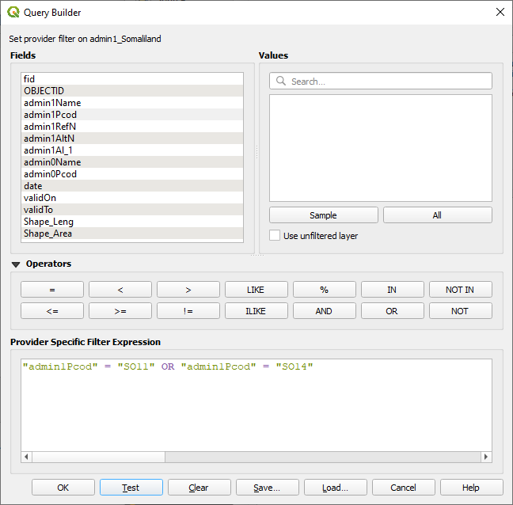

Consultas no espaciales#
Selección manual#
Haga clic en la tabla de atributos para seleccionar manualmente las entidades.
Si mantiene presionado Ctrl mientras seleccionas entidades, puede seleccionar varias entidades al mismo tiempo.
Ejemplo: Seleccionar manualmente los países con la tabla de atributos
Seleccionar por expresión#
La herramienta Select by Expression le permite crear una expresión para seleccionar las entidades de una capa. Por ejemplo, puede seleccionar atributos específicos o seleccionar entidades donde el valor de un atributo se encuentre en un rango específico.
Abra la tabla de atributos y seleccione la herramienta
Select by Expression.

Se abrirá el generador de expresiones.

Operadores de comparación#
>,<,=,!=
Ejemplo: Seleccione todas las ciudades con más de 20 millones de habitantes en 2015: "2015" > 20000
Operadores especiales#
LIKE
Ejemplo: Seleccione todos los países de Asia: "continent" LIKE 'asia'
Operadores lógicos#
AND,ORSe puede utilizar para combinar diferentes consultas o criterios.
Ejemplo: Las ciudades, que no contaban con una población de un millón de habitantes en 1950, habían aumentado vertiginosamente hasta superar los 10 millones de habitantes en 2015: "1950" < 1000 AND "2015" > 10000
Expresiones complejas#
También es posible agregar expresiones que encadenen diferentes requisitos. En este caso, no olvide encerrar entre corchetes las partes individuales de la expresión, como por ejemplo:
Guardar las entidades seleccionadas como un archivo nuevo#
Layer-Properties->Export->Save only selected features
Ejemplo: Exportar las entidades seleccionadas como un archivo nuevo
Seleccionar por opciones de expresión#
operador |
función |
|---|---|
|
suma |
|
resta |
|
multiplicación |
|
división |
|
resto de la división |
operador |
función |
|---|---|
|
igual a |
|
no igual a |
|
menor que |
|
mayor que |
|
menor o igual que |
|
mayor o igual que |
Se pueden utilizar operadores como AND, OR para combinar diferentes consultas o criterios.
operador |
función |
|---|---|
|
lógico Y |
|
lógico O |
|
lógico NO |
operador |
función |
|---|---|
|
concordancia de patrones |
|
comprueba si un valor está en una lista de valores |
|
comprueba si hay valores NULL |
|
comprueba si un valor se está dentro de un rango especificado |
|
expresiones condicionales |
Recursos adicionales#
Puede acceder a la información sobre operadores lógicos en la documentación de QGIS a través del siguiente enlace.